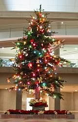
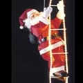

クリスマスは、12月25日にイエス・キリストの生誕を祝うお祭です。
イエス・キリストの誕生日には色々な説があるのですが、なぜ12月25日に生誕を祝うようになったのでしょうか？
ひとつの説として、古代ローマで冬至の日に行われていた「太陽神の誕生祭」や「農耕神への収穫祭」が、後にイエス・キリストの生誕祭と結びついたというのがあります。
当時のローマでは、太陽神を崇拝する異教が大きな力を持ち、12月25日を太陽神を祭る祝祭日としていました。
そこで、初代キリスト教の指導者達が、異教徒との対立や摩擦を生むことなくキリスト教をひろめるために、12月25日をクリスマスにしたということです。
クリスマスの語源はラテン語の「クリストゥス・ミサ」の略で、キリスト(Christ)のミサ（mas）を意味しています。クリスマスは、Christmas または Xmas と表記します。
正式な場合にはChristmasと書きますが、通称としてXmas。
Xmas の「Χ」は、ギリシア語のΧΡΙΣΤΟΣ(Christ)の頭文字、ΧをChristに代用したものです。

クリスマスに飾られる木には、モミの木、松、ヒイラギ、ヤドリギ、月桂樹、キヅタ等です。すべてに共通しているのは「常緑樹」ということです。
クリスマスツリーの由来は、ドイツに起源があるといわれています。
ドイツでは、常緑樹のモミの木は冬でも葉が落ちず、永遠の生命を象徴するものとして崇拝の対象とされていました。
そして、モミの木に住む小人が村に幸せを運んでくれるという信仰から、花・卵・ロウソクなどをモミの木に飾りました。それがクリスマスツリーの起源と考えられています。
またクリスマスリースの由来についても諸説がありますが、用途的には葉に殺菌作用と抗菌作用のある常緑樹を玄関に飾り、魔よけにしたというものと、豊作を願って玄関を飾る、日本で言えばしめ縄のような役割があったというものが有力です。

サンタクロースのルーツは４世紀、現在のトルコに実在した聖ニコラウスがモデルと言われています。そして彼はさまざまな奇跡を起こして不幸な人々を助ける、庶民の味方として人気があったと言います。
ある時、貧困のために身売りされようとしていた娘を助けるために、金貨の入った袋を娘の家の煙突から投げ入れたところ、暖炉に洗濯物として干してあった靴下のなかに入ったというのが『サンタクロースが煙突から入って、ソックスの中にプレゼントを入れていく』という伝説の由来だそうです。
オランダでは聖ニコラスを「ジンタクロース」と呼び、これがなまって「サンタクロース」になったと言われています。